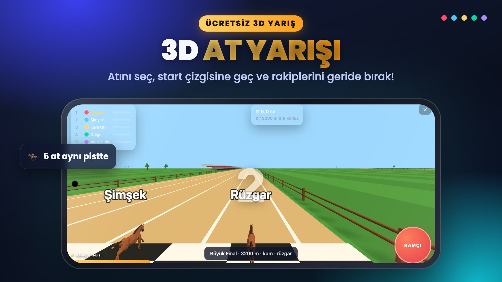
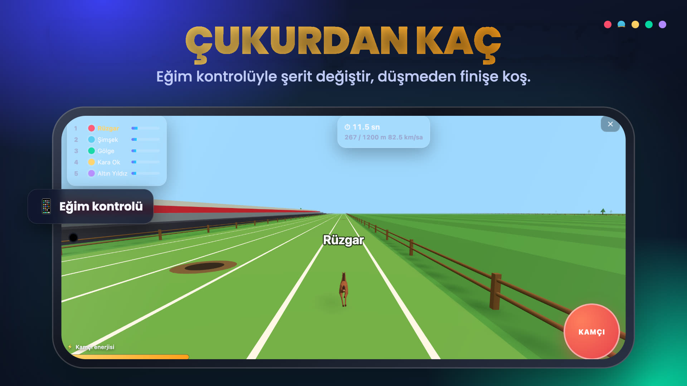
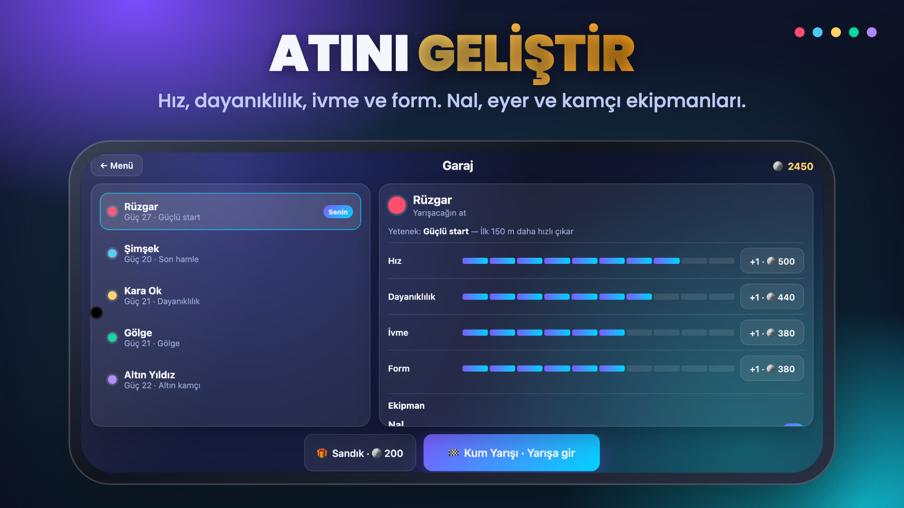

AT YARIŞI
Kamçıla, eğ, çukurlardan kaç! 3D at yarışında sezonu kazan, atını geliştir ve şampiyon ol.
Google Play'de yakında App Store'da yakındaÜcretsiz · Android ve iOS · Yatay ekranda oynanır · Hesap gerektirmez
Özellikler
🏁 5 turluk sezon
Çim, kum ve ıslak pistte, gece ve rüzgarlı yarışlarda puan topla. Sezon tablosunda zirveye çık.
👆 Bas-çek kamçı
Her dokunuş atına hız kazandırır. Enerjini son düzlüğe sakla ve rakiplerini finişte geç.
📱 Telefonu eğ
Eğim kontrolüyle şerit değiştir, pistteki çukurlardan kaçın. Düşen atın sakatlanır.
🐎 Atını geliştir
Hız, dayanıklılık, ivme ve form statlarını altınla yükselt. Nal, eyer ve kamçı ekipmanı al.
🎯 Görevler ve başarımlar
Her gün yeni görevler, kazanılacak başarımlar ve açılacak sandıklar seni bekliyor.
🎬 Finiş kamerası
Yarış sonunda yavaş çekim ve yandan finiş kamerasıyla kazananı gör.
Ekranlar


